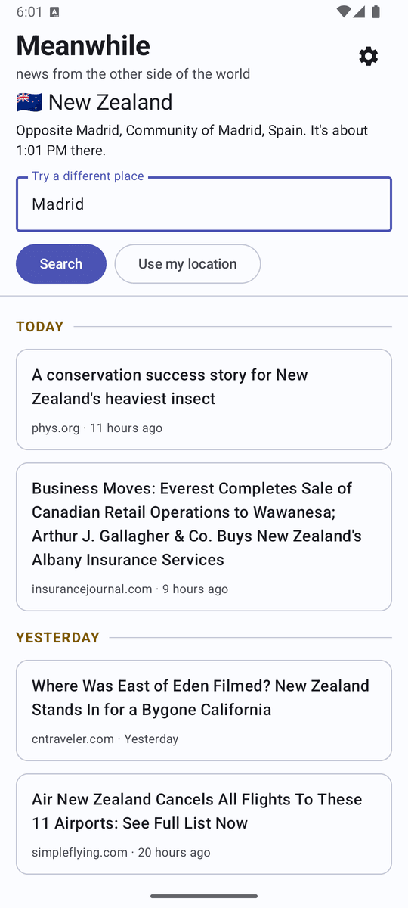
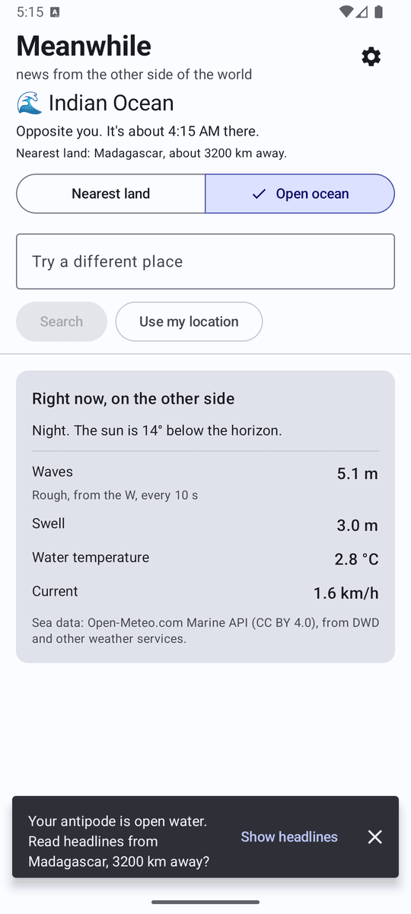

Meanwhile is an Android app that shows you the news from the other side of the world.
It finds the point exactly opposite you on Earth, your antipode, and shows headlines published in that country.
There is a catch: about 70% of the planet is ocean, so for most people the opposite point is open water.
From Vancouver it is the southern Indian Ocean, 3,200 km from Madagascar.
So when your antipode is at sea, Meanwhile opens on the sea itself: whether it is day or night there,
and live wave height, swell, water temperature and current.
A switch lets you read headlines from the nearest land instead, or go back out to sea.
Meanwhile uses your approximate location, or a place you search for, to work out the opposite point. On land it uses that country; on water it searches outwards for the nearest country with news coverage. Headlines come from the GDELT Project, supported by public news feeds from a few outlets for small Pacific places that GDELT barely covers, and sea conditions come from Open-Meteo. Results are cleaned up so that one outlet can't fill the list and headlines in the wrong language for a country are dropped.
Meanwhile is a free hobby project with no ads and no account, and it is in testing now. It is not on Google Play yet. Usage and crash reports are off unless you turn them on, and the app can't put your location in them. You can read the full details in the privacy policy. The app is open source under the GNU GPL v3, and the code is on GitHub.
It started life as Polar News, but "polar" reads as the Arctic, or as politically polarized, and the point was neither.

